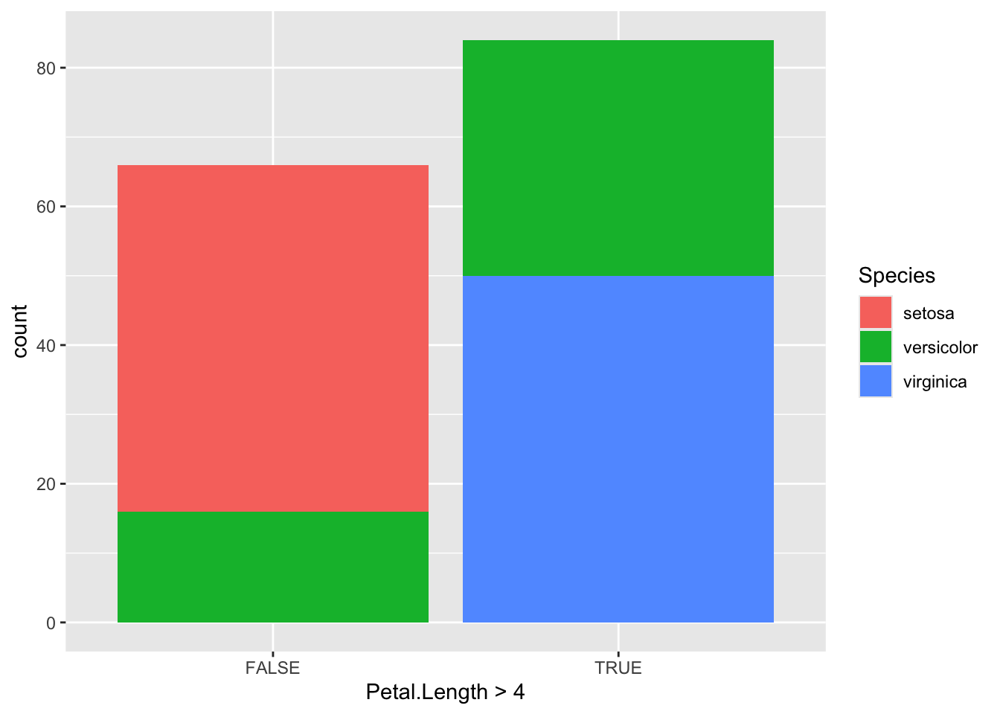
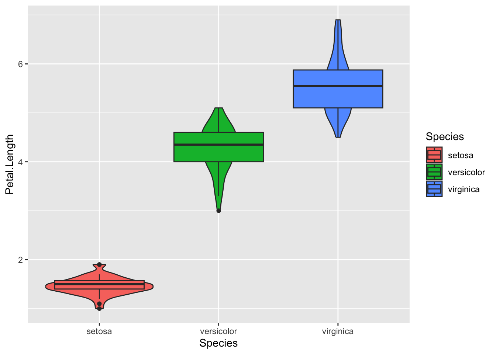

This section is intended to provide a very bare bones explanation of how to do some things in R.
It covers some basic methods including reading and writing data, manipulating and reshaping datasets with tidyverse verbs and drawing some simple charts with ggplot2. For much better resources, please use https://r4ds.hadley.nz/ which is awesome.
This is a work in progress.
1.1 Load Libraries
Libraries (also known as packages) allow R to do things it can’t do out of the box.
You can install packages using the install.packages("packagename") syntax. If you haven’t used R before then you should first install the tidyverse packages by typing install.packages("tidyverse")
You should always load the libraries you’ll be using at the top of your script.
library(tidyverse)
── Attaching core tidyverse packages ──────────────────────── tidyverse 2.0.0 ──
✔ dplyr 1.1.4 ✔ readr 2.1.5
✔ forcats 1.0.0 ✔ stringr 1.5.1
✔ ggplot2 3.5.1 ✔ tibble 3.2.1
✔ lubridate 1.9.3 ✔ tidyr 1.3.1
✔ purrr 1.0.2
── Conflicts ────────────────────────────────────────── tidyverse_conflicts() ──
✖ dplyr::filter() masks stats::filter()
✖ dplyr::lag() masks stats::lag()
ℹ Use the conflicted package (<http://conflicted.r-lib.org/>) to force all conflicts to become errors
1.2 Write CSV files
We’ll be using the iris dataset, which is built in and which can be accessed by typing iris.
We need a toy dataset to work with, so let’s start by saving a copy of iris as a csv file. This is backwards from what we normally do, which is to save a data set at the end, but will serve our purpose here.
write_csv(iris, "iris.csv") # Saving to CSV
Check that it appears in the files list on the right
1.3 Read CSV files
Next let’s read the file back in and assign it to a data frame
The <- symbol assigns the data contained in the file to an object in the R environment.
You can have as many or as few objects as you need.
iris_data <-read_csv("iris.csv")
Rows: 150 Columns: 5
── Column specification ────────────────────────────────────────────────────────
Delimiter: ","
chr (1): Species
dbl (4): Sepal.Length, Sepal.Width, Petal.Length, Petal.Width
ℹ Use `spec()` to retrieve the full column specification for this data.
ℹ Specify the column types or set `show_col_types = FALSE` to quiet this message.
The messages are important. Check which variables have been assigned to which class
chr:
Full Form: character
Used for columns containing text data (strings).
dbl or num:
Full Form: double/number
Represents floating-point numbers (numeric values with decimal places).
This is the most common numeric data type used in R for real numbers.
int:
Full Form: integer
Used for whole numbers.
lgl:
Full Form: logical
Used for boolean (TRUE/FALSE) values.
fct:
Full Form: factor
Used for categorical data (discrete values like categories, levels, or groups).
dttm:
Full Form: date-time
Represents date and time objects (POSIXct class) which include both date and time information.
date:
Full Form: Date
Used for date objects, containing only date information (year, month, day).
time:
Full Form: time
Used for time objects (sometimes seen when working with time series data, though less common than date or POSIXct).
lst:
Full Form: list
Represents a list column, which can hold any type of R object, including vectors, data frames, or even other lists.
Sepal.Length Sepal.Width Petal.Length Petal.Width
Min. :4.300 Min. :2.000 Min. :1.000 Min. :0.100
1st Qu.:5.100 1st Qu.:2.800 1st Qu.:1.600 1st Qu.:0.300
Median :5.800 Median :3.000 Median :4.350 Median :1.300
Mean :5.843 Mean :3.057 Mean :3.758 Mean :1.199
3rd Qu.:6.400 3rd Qu.:3.300 3rd Qu.:5.100 3rd Qu.:1.800
Max. :7.900 Max. :4.400 Max. :6.900 Max. :2.500
Species
Length:150
Class :character
Mode :character
1.6 Pipes
The %>% pipe operator, commonly called the “pipe,” is one of the most important tools in the tidyverse. It is used to pass the result of one function into the next function, making your code cleaner and easier to read by chaining operations together.
1.6.1 How the Pipe Works:
The pipe takes the output of the expression on its left and passes it as the first argument to the function on its right.
# A tibble: 2 × 2
Species mean_length
<chr> <dbl>
1 versicolor 6.34
2 virginica 6.72
1.6.3 Benefits of Using the Pipe:
Improves readability: It reads like a logical sequence of steps.
Reduces the need for intermediate variables: You don’t need to create multiple intermediate objects.
Simplifies function chaining: Functions are applied one after the other, making it clear what happens at each step.
1.7 Single Table Verbs (basic)
All the main actions in tidyverse take a tibble (the new name for a dataframe), do something with it and then return another tibble. These are the ‘single table verbs’.
These are the main functions you’ll need to learn.
All of them accept lists, where you separate items with a comma.
1.7.1 Filter
filter():
Filters rows based on specified conditions.
Returns only the rows that meet the condition(s).
iris_data %>%filter( Species =="setosa", Sepal.Length >4.3)
Filtering rows where Species is NOT “setosa” by negating the test with ! placed at the start. Compare to above where != was used for not-equal. Here it tests if the species equals setosa, then returns all rows where that is NOT true.
cols = : The columns that will be used to pivot in to the new ‘values’ column. Here we want all columns from the dataset except the religion column which provides the labels, so simply exclude that one with !religion. You could also specify specific columns with a list cols = c("<$10k","$10-20k","$20-30k")
This is the exact opposite of pivot_longer. You’ll be taking the values of a column (here income) that you want to pivot to be the new column names in the wide format tibble, then distributing the values of another column (here count) to the appropriate columns and rows (here religion).
relig_income_long %>%pivot_wider(id_cols = religion,names_from = income, values_from = n )
relig_income %>%# Pivot the table to be long formatpivot_longer( cols =!religion, names_to ="income", values_to ="count") %>%# Remove lines where no income data was providedfilter( income !="Don't know/refused" ) %>%# Sort the data to sho arrange( income, religion )
These verbs create a data frame with one row per group, where the variables are a summary of values. group_by groups data by one or more columns,
group_by allows you to create groupwise calculations like group means
This approach does not collapse the data, so if you wanted three rows, with a single mean value for each one, you need to do something else (see below).
Always ungroup() if you plan to do further calculations on individual rows.
Summarise() and reframe() are almost always used in combination with group_by().
As with all verbs, you can provide lists to group_by(), reframe() and summarise().
1.7.14 Reframe
Purpose: A more flexible way to return multiple results for each group without reducing it to one row per group.
Typical Use: Used when you want to keep multiple rows per group but still perform summary operations. i.e. when creating denominators etc.
Behavior: Allows for returning multiple rows or multiple values for each group, so it doesn’t necessarily collapse the data.
If you choose to include any of the original variables in your reframed tibble, the resulting tibble will have the same dimensions as your original. Here the groupwise counts are added to count and the groupwise mean sepal lengths are added to mean.sepal.length.
Joins add columns from one tibble to another, matching the observations using key variables.
There are three types of join
A left_join() keeps all observations in x.
A right_join() keeps all observations in y.
A full_join() keeps all observations in x and y.
We’ll use the band_members and band_instruments data frames for this
band_members
# A tibble: 3 × 2
name band
<chr> <chr>
1 Mick Stones
2 John Beatles
3 Paul Beatles
band_instruments
# A tibble: 3 × 2
name plays
<chr> <chr>
1 John guitar
2 Paul bass
3 Keith guitar
You can see that both tibbles contain two variables, of which one is called name. This will be the key variable that is used for joining. R will automatically look for matching variables, and will merge the data semi-automatically. It even works if there’s more than one key variable.
1.8.1 Left join
band_members %>%left_join( band_instruments)
Joining with `by = join_by(name)`
# A tibble: 3 × 3
name band plays
<chr> <chr> <chr>
1 Mick Stones <NA>
2 John Beatles guitar
3 Paul Beatles bass
You can see that the new left_joined tibble now contains three variables.
All three band members who were in the band_members tibble are still represented here, but Keith is not included in this tibble because left_join adds new columns to observations that already exist in band_members
1.8.2 Right Join
The right_join works in exactly the opposite way. Here the right_join adds new columns to the observations of the right hand tibble (i.e. to band_instruments).
right_join( band_members, band_instruments)
Joining with `by = join_by(name)`
# A tibble: 3 × 3
name band plays
<chr> <chr> <chr>
1 John Beatles guitar
2 Paul Beatles bass
3 Keith <NA> guitar
1.8.3 Full Join
The full_join keeps all the observations and all the columns of both data sets.
full_join( band_members, band_instruments)
Joining with `by = join_by(name)`
# A tibble: 4 × 3
name band plays
<chr> <chr> <chr>
1 Mick Stones <NA>
2 John Beatles guitar
3 Paul Beatles bass
4 Keith <NA> guitar
1.9 ggplot
Now we’ve covered the basics of managing and manipulating tibbles, let’s look at the basics of drawing charts in ggplot.
To understand the syntax of ggplot, you have to understand how charts created with this system are built in layers. Just like how we pipe data through %>% when handling tibbles, we add new layers to ggplot charts using +
ggplot accepts piped data as an input. The initial ggplot is a blank chart with no axes. Let’s pipe the iris tibble in to a ggplot.
iris %>%ggplot()
Next we want to describe the ‘aesthetics’ of the plot. This is how we define the variables that will contribute to the axes, groups, points, shapes, fills, areas and so on.
Let’s provide ggplot with some aesthetics in the form of an x (Sepal.Length) and y (Sepal.Width)
This should add the axes which will be appropriately scaled according to the limits of the two variables.
This is useful, but doesn’t tell us anything about the points. Colours, grouping, fills etc are defined in the aesthethics, so let’s add some colours to the points according to which species they represent.
You can also use the shape= aesthetic to add different shapes. Here we can now see information on sepal length (x), sepal width (y), species (shape) and petal length (color).
In this case, that makes little sense, because there’s three species. Adding the colour aesthethic groups the data and the lines will be drawn by group
`geom_smooth()` using method = 'loess' and formula = 'y ~ x'
A problem with facets can be to do with axes being locked to the minimum and maximum values of the variable. You may wish to ‘free’ the axes using scales="free", scales="free_x" or scales="free_y"
`geom_smooth()` using method = 'loess' and formula = 'y ~ x'
Finally we can see a linear relationship in some of the data. Setosa for instance has a strong correlation between sepal length and sepal width, which does not appear to be true of the other species, regardless of the petal length division.
1.9.3 Bar chart
geom_bar() – Creates bar plots, either stacked or grouped.
- Example: `geom_bar(stat = "identity")` for bar heights based on a variable.
To plot a count of occurrances in the data use stat="count"
The default is a stacked bar chart. For this you only need to provide x.
iris_data %>%ggplot(aes( Petal.Length >4,fill = Species ) )+geom_bar(stat="count")

You can change this to a side-by-side chart using `position=“dodge”
iris %>%ggplot(aes( Petal.Length >4,fill = Species ) )+geom_bar(stat="count",position ="dodge" )
iris %>%ggplot(aes( Petal.Length >4,fill = Species ) )+geom_bar(stat="count" )+facet_grid(.~Species)
In lots of cases you’ll have precomputed some summaries and will want to print the exact identity values. Let’s reframe the iris data as a set of averages (see the reframe section) and then pipe the result in to a ggplot using stat="identity" Unlike with the stat="count" default, you need to provide both x (grouping) and x (value) data to stat = "identity.
iris %>%ggplot(aes( Petal.Length,fill = Species ) )+geom_histogram()
`stat_bin()` using `bins = 30`. Pick better value with `binwidth`.
1.9.6 Density plots
geom_density() – Shows the distribution of a continuous variable with a smooth density curve.
- Example: `geom_density()`
Density plots are very useful when you want to look at distributions of data in different classes. They are similar in many respects to histograms.
iris %>%ggplot(aes( Petal.Length,fill = Species ) )+geom_density()
You’ll want to see what’s going on in the overlapping regions, so you can add transparency with alpha=. Transparency can be used in any ggplot.
iris %>%ggplot(aes( Petal.Length,fill = Species ) )+geom_density(alpha=0.4)
1.9.7 Boxplots
geom_boxplot() – Visualizes the distribution of a variable through quartiles and potential outliers.
- Example: `geom_boxplot()`
These are a mainstay of epidemiology.
iris %>%ggplot(aes( Species, Petal.Length,fill = Species ) )+geom_boxplot()
1.9.8 Violin plots
geom_violin() – A hybrid of boxplot and density plot, showing distribution shape along with quartiles.
- Example: `geom_violin()`
iris %>%ggplot(aes( Species, Petal.Length,fill = Species ) )+geom_violin()
1.9.9 Violin & Box together
Adding a geom_box() layer to a violin plot can be useful.
iris %>%ggplot(aes( Species, Petal.Length,fill = Species ) )+geom_boxplot()+geom_violin()
But this is ugly. and the boxplots are obscured by the violins. The order of the layers in a ggplot matters
iris %>%ggplot(aes( Species, Petal.Length,fill = Species ) )+geom_violin()+geom_boxplot()

Changing the order of the layers improves things, but we can control each layer individually by changing it’s mappings. This is the reason why the geoms all have brackets!
Let’s fill the violin plots, adding some transparency. We’ll also make the boxes on the boxplots a bit narrower so that we can see all the violin data, and let’s remove the outlier points.
Summarizing or Counting: n(), pmin(), pmax(), any(), all()
These helper functions are used specifically within verbs like mutate(), filter(), summarise(), arrange(), and others to perform specialized operations inside the context of a single table.